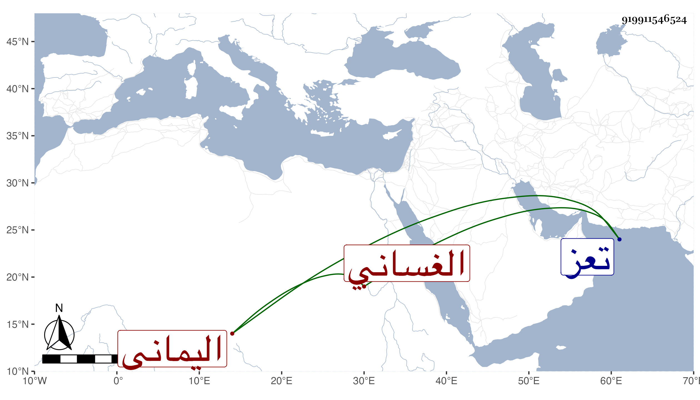

0902Sakhawi.DawLamic.ITO20230111-ara1.EIS1600.919911546524
Biography ID: 919911546524
906
إسماعيل بن أحمد بن إسماعيل بن العباس بن علي بن داود بن يوسف ابن عمر بن علي بن رسول الأشرف النصر بن الأشرف الغساني اليماني الماضي أبوه والآتي جده قريبا . ولي اليمين بعد أخيه المنصور عبد الله في ربيع الآخر سنة ثلاثين وثمانمائة وهو صغير قبل اختتانه ثم قبض عليه العسكر بمدينة تعز وخلعوه بعمه يحيى ولم يلبث أن مات في السنة بالدملوه . ورأيت من أرخه سنة خمس وثلاثين .
